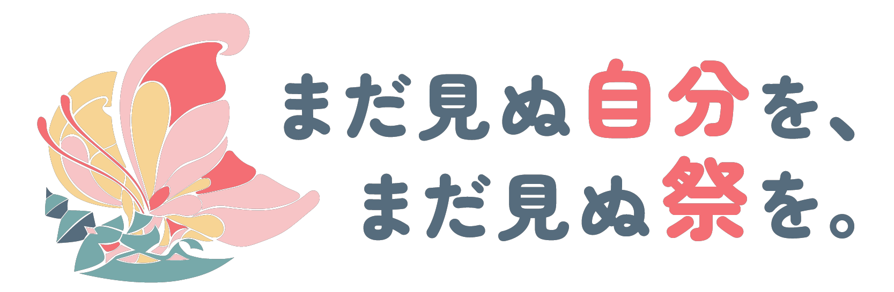
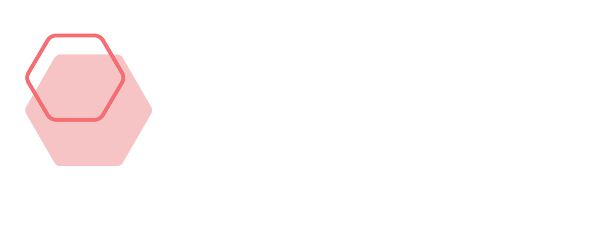

Top
運営スタッフとは
早稲田祭とは
運営スタッフのリアル
局紹介
運スタの全体像
運スタ写真館
入会方法
新歓情報
よくある質問
お問合せについて

NEWS
新歓公式フリーペーパー
ついに公開！
説明会動画の第4弾を新歓公式
YouTube
にて公開しました
新歓公式LINEにて
VOOM
を公開中！
説明会動画の第3弾を新歓公式
YouTube
にて公開しました
説明会動画の第2弾を新歓公式
YouTube
にて公開しました
交流企画「運スタミッケ」追加募集決定！ 参加希望フォームは
こちら
から
交流企画「運スタゼミナール」追加募集決定！ 参加希望フォームは
こちら
から
交流企画「運スタカウンセリング」追加募集決定！ 参加希望フォームは
こちら
から
交流企画参加希望フォーム 二次募集の受付は終了しました。
説明会動画の第1弾を新歓公式
YouTube
にて公開しました
交流企画参加希望フォーム 二次募集締切まであと2日！
交流企画参加希望フォーム 二次募集受付開始！
交流企画参加希望フォーム 一次募集の受付は終了しました。
早稲田祭2023運営スタッフ 募集要項
公開！
交流企画参加希望フォーム 一次募集締切まであと2日！
交流企画参加希望フォーム 一次募集受付開始！
対面説明会 参加希望フォームは
こちら
から！
説明会
ワセトーーーーク！！
運スターツアーズ
運スタミッケ
運スタカウンセリング
運スタゼミナール

早稲田祭とは
年に1度、早稲田キャンパス・戸山キャンパス・周辺地域を舞台に開催される早稲田文化の祭典、それが「早稲田祭」です。日本最大級の学園祭である早稲田祭についての詳しい情報は、
こちら
からご覧ください。
運営スタッフとは
早稲田祭2023の開催、そして成功に向けて日々活動しているのが私たち「早稲田祭2023運営スタッフ」です。活動日時や活動内容については
こちら
からご覧ください。
運営スタッフのリアル
局紹介
運営スタッフの全体像
入会方法